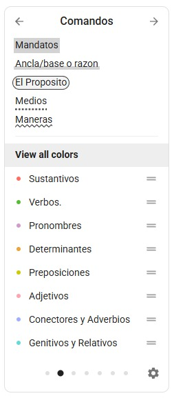
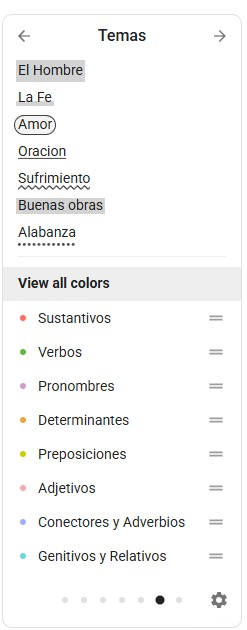

📖 Guía de Exégesis Bíblica
Mesa de Trabajo y Flujo Inductivo de 5 Pasos (Método John Piper & Biblearc)
🔍 Paso 1: Observación y Marcado (Markup: Gramática y 7 Lentes)
La exégesis bíblica es el arte y la ciencia de extraer el significado original que el autor bíblico quiso comunicar. John Piper desarrolló un método sistemático que nos ayuda a descubrir no solo QUÉ dice el texto, sino CÓMO está estructurado su argumento y POR QUÉ cada parte se relaciona con las demás.
🎯 Meta Principal del Método:
Descubrir la "corriente de pensamiento" del autor bíblico, siguiendo su línea de argumento paso a paso para captar el significado completo que Dios inspiró.
1. 📝 Observación
¿Qué dice exactamente el texto? Identificar cada palabra, frase y proposiciónAfirmación completa que tiene sujeto y predicado. sin interpretar todavía.
2. 🔍 Interpretación
¿Qué significa lo que dice? Aplicar gramática, contexto histórico y relaciones lógicas.
3. 🎯 Aplicación
¿Qué significa para nosotros hoy? Aplicar las verdades descubiertas a nuestra vida.
💡 Cita Clave de Piper:
"El punto de ver las proposiciones relacionadas no es simplemente aclarar el significado de cada proposición, sino que también nos ayuda a atrapar la corriente del autor."
🏛️ Jerarquía de Unidades y Mapa Completo del EBI en Biblearc
Biblearc ordena el texto de mayor a menor: Libro → Párrafo → Oración → Proposición → Frase → Palabra. Este flujo en 5 pasos cubre todas las etapas del Estudio Bíblico Inductivo clásico (Observación → Interpretación → Correlación → Aplicación) asignando un rol exclusivo a cada herramienta para evitar duplicar esfuerzo:
| Paso del EBI | Etapa EBI Clásico | Módulo en Biblearc | Trabajo Exclusivo y Qué NO Duplicar |
|---|---|---|---|
| Paso 1: Observación y Marcado | Observación (¿Qué dice?) |
Markup 1 (Gramática)Markup 2 (7 Lentes) |
• Capa 1 (Opcional): Pintar morfología palabra por palabra usando la Teoría Gramatical y la Guía de 9 Colores. • Capa 2: Aplicar los 7 Lentes oficiales en orden. • No trazar arcos ni abrir comentarios externos aún. |
| Paso 2: Fraseo Estructural | Observación / Interpretación Sintáctica | Phrasing(Método DIALS) |
Nivel Frase: Dividir en los 9 tipos de frases, sangrar (genitivos bajo sustantivo cabeza), conectar con las 3 flechas nativas (azul, verde, amarilla) y etiquetar (27 relaciones + 19 genitivos). • Cero resaltados de color sobre palabras sueltas. |
| Paso 3: Arqueo y Enmarcado | Interpretación Discursiva (¿Qué quiso decir?) |
Discourse( Bracketing / Arcing) |
Nivel Proposición: Agrupar ideas verbales, asignar las 18 relaciones estándar (+4 extendidas), marcar el polo primario, trazar Niveles de Lógica y redactar el Main Point Summary. • No bajar a palabras sueltas. |
| Paso 4: Profundización y Verificación | Interpretación Profunda y Correlación | Diagramming + Searching + Paraphrase |
• Sintaxis fina: Usar Diagramming solo como microscopio en versículos complejos. • Léxico y Correlación: Estudio de palabras en griego/hebreo (Strong), variantes textuales, comparación de versiones y referencias cruzadas. • Comprobación: Paráfrasis ampliada y contraste final con comentarios y Look at the Book. |
| Paso 5: Consolidación y Vida | Aplicación y Enseñanza (¿Cómo respondo?) |
My Bible + Savor + Notes |
• My Bible: Guardar temas canónicos permanentes, palabras clave del libro y notas finales limpias. • Savor: Aplicación de Mente, Corazón y Manos. • Notes (Didactics): Bosquejo homilético o de grupo. |
La Observación nos enseña a ver exactamente lo que dice el pasaje sin añadir nuestras propias ideas. De ella parten la interpretación precisa y la aplicación correcta. Antes de marcar la gramática, debemos seguir estos sub-pasos metodológicos:
1. Comience con Oración
La oración es a menudo el elemento que falta; es el Espíritu Santo quien nos guía a toda la verdad y nos revela la Palabra. Siempre que abra su Biblia, pídale a Dios que le enseñe.
2. Lectura Repetitiva
El primer paso práctico consiste en leer el pasaje entero varias veces. Esta lectura repetida permitirá una saturación del contenido y la observación progresiva de datos y conceptos que no se captan durante las primeras lecturas.
3. Hacer las Seis Preguntas Clave (Se realiza con la herramienta Markup)
Al estudiar cualquier pasaje, cultive el hábito de preguntar constantemente al texto: ¿Quién?, ¿Qué?, ¿Cuándo?, ¿Dónde?, ¿Por qué? y ¿Cómo? Estas preguntas son los elementos básicos de la observación precisa y son esenciales para evitar errores interpretativos. Nota: En Biblearc, este paso se realiza de manera 100% textual y visual utilizando el Lente 2 (Preguntas) dentro de Markup.
4. Identificar el Contexto (Se realiza con la herramienta Markup)
Observe cuidadosamente la relación del pasaje con los versículos que lo preceden y lo siguen. Lea la introducción del libro para entender al autor, la fecha, los destinatarios, el propósito y el tema general de la obra. Nota: En Biblearc, el reconocimiento de estas estructuras contextuales se aplica directamente utilizando el Lente 5 (Contexto) dentro de Markup para no divagar.
5. Asignar Títulos Tentativos (Se realiza con la herramienta Markup)
Para esto se necesita pensar y leer el capítulo varias veces, metiéndose de lleno en el libro para poder extraer su mensaje central. El título que asigne debe ser corto, utilizar palabras textuales del capítulo, dar un sentido claro del texto y respetar escrupulosamente la idea del autor. Nota: Sintetizamos esto visualmente mediante la asignación estricta del Tópico Principal usando el Lente 3 (Tópicos) de Markup.
📚 Tu Manual de Referencia para la Capa 1 (Gramática Inicial)
Consulta esta sección mientras aplicas colores morfológicos en Markup 1 o en la Mesa de Trabajo Interactiva para asegurarte de clasificar correctamente cada sustantivo, verbo, forma verbal, preposición o caso genitivo antes de colorearlo.
📖 1.3.1 Fundamentos de la Oración
Proposición: Una afirmación completa que tiene sujeto y predicado. (Ejemplo:
"Jesús lloró").
Frase: Grupo de palabras sin sujeto ni predicado completos. (Ejemplo:
"por la fe").
📝 1.3.2 Las Categorías Gramaticales Clave
Para asegurar una base firme y no dejar lugar a dudas, es vital comprender la función de estas categorías fundamentales en el texto bíblico antes de aplicar colores.
1. El Modo IndicativoModo verbal de la realidad y los hechos concretos. (Verbos)
¿Qué es? Es el modo de la realidad y los hechos concretos. A diferencia del imperativoModo verbal que expresa mandatos, órdenes o peticiones. (mandato) o subjuntivoModo verbal que expresa acciones posibles, deseadas o hipotéticas. (posibilidad), el indicativo declara lo que ES.
Importancia Exegética: Es la base de las doctrinas. Establece las verdades fundamentales (Ej: "Dios amó al mundo", "Cristo murió por nuestros pecados").
2. Los SustantivosPalabra que nombra personas, lugares, objetos o conceptos.
¿Qué son? Palabras que nombran personas, lugares, objetos o conceptos.
Importancia Exegética: Debemos distinguir entre sustantivos concretos (templo, pan, Pedro) y abstractos (fe, gracia, justificación). Los abstractos suelen contener el peso doctrinal más profundo del pasaje.
3. Los PronombresPalabra que sustituye al sustantivo para evitar su repetición.
¿Qué son? Palabras que sustituyen al sustantivo para evitar repetición (él, nosotros, ese, quien).
Importancia Exegética: Son los "hilos" del argumento. Rastrear un pronombre (como el relativo "el cual" o "quien") es vital para saber exactamente de quién está hablando el autor en oraciones largas.
4. Los AdjetivosPalabra que califica, describe o limita a un sustantivo.
¿Qué son? Palabras que califican, describen o limitan a un sustantivo.
Importancia Exegética: Añaden precisión teológica. Diferencia entre uso atributivo ("El buen pastor da su vida") y predicativo ("Dios es bueno").
5. Los AdverbiosPalabra que modifica a un verbo, adjetivo u otro adverbio (tiempo, modo, cantidad).
¿Qué son? Modifican verbos, adjetivos u otros adverbios (indican tiempo, lugar, modo, cantidad).
Importancia Exegética: Definen cómo o cuándo ocurre la acción. Específicamente vitales son las negaciones (no, nunca), que pueden alterar completamente el significado de una proposición.
6. Artículos y Determinantes
¿Qué son? Palabras que acompañan al sustantivo para especificarlo (el, la, un, este, todo).
Importancia Exegética: En griego koiné, el artículo definido (el/la) marca una identidad específica. La ausencia de artículo a menudo enfatiza la cualidad o naturaleza (Ej: "y el Verbo era Dios" - divino por naturaleza).
7. Las ConjuncionesPalabra que une ideas o proposiciones (el pegamento de la oración).
¿Qué son? Palabras que unen ideas o términos. Son el "pegamento" de la oración.
Importancia Exegética: Las Coordinantes (Cc) unen elementos iguales (y, o, pero); las Subordinantes (Cs) crean dependencia lógica (porque, para que).
8. Vocativos e Interjecciones
Vocativo (Voc): Cuando el autor se dirige directamente a alguien, llamándolo (Ej:
"Hermanos", "Hijo mío").
Interjección (Int): Palabras que
expresan una emoción profunda (Ej: "¡Ay!", "¡Oh!"). Reflejan claramente el tono
pastoral o profético del autor.
9. Las PreposicionesPalabra invariable que une términos mostrando la relación entre ellos.
¿Qué son? Palabras invariables que unen términos y muestran la relación entre ellos (en, con, por, para, hacia).
Importancia Exegética: Actúan como puentes lógicos. Pueden indicar dirección ("hacia Dios"), posición ("en Cristo"), instrumento ("por gracia") o propósito ("para buenas obras").
⚡ 1.3.3 Formas Verbales Avanzadas
∞ InfinitivosVerbo en su forma pura, sin conjugar (-ar, -er, -ir).
Definición Simple: Es el verbo en su forma "pura", sin conjugar. En español terminan en -ar, -er, -ir.
Ejemplos: caminar, comer, vivir, ser, estar, saber, amar
En frases bíblicas: "para amar", "sin saber", "al oír", "comenzó a predicar"
Propósito
Uso: Indica para qué se hace algo
- "Vino
para salvaral mundo"
Resultado
Uso: Muestra qué resulta de una acción
- "Suficiente
para alimentara todos"
Sustantivo
Uso: Funciona como un nombre
- "
Amares lo más importante"
🎭 ParticipiosForma verbal que funciona como adjetivo (-ado, -ido, -ando, -iendo).
Definición Simple: Es una forma verbal que combina características de verbo y adjetivo. Describe una acción pero también una condición o estado.
En Español: Terminan en -ando, -iendo (gerundios) o -ado, -ido (participios pasados)
Temporal
- "
Llegandoa casa, oró"
Causal
- "
Estandoenfermo, no vino"
Modal (Manera)
- "Habló
llorando"
Condicional
- "
Creyendo, serás salvo"
Concesivo
- "
Siendopobre, era generoso"
Circunstancial
- "
Viviendoen tiendas"
📝 ImperativoModo verbal que expresa mandatos, órdenes o peticiones.
Definición Simple: Expresa mandatos, órdenes, peticiones o exhortaciones. ("Ven", "Creed")
Mandato
"Sígueme" (Mt 4:19)
Prohibición
"No temas" (Lc 1:30)
Petición
"Danos hoy..." (Mt 6:11)
Permiso
"Dejad que vengan..." (Mt 19:14)
🔮 SubjuntivoModo verbal que expresa acciones posibles, deseadas o hipotéticas.
Definición Simple: Expresa acciones posibles, deseadas o hipotéticas. ("Que venga", "Si fuera")
Propósito
"Para que sepas..." (Lc 1:4)
Resultado
"De modo que nadie se gloríe" (1 Co 1:29)
Condición
"Si confesares..." (Ro 10:9)
Temor
"No sea que..." (2 Co 12:20)
🏷️ 1.3.4 El Caso GenitivoCaso griego que indica posesión, origen o relación (típicamente de...). (Casos Griegos)
| Caso Griego | Función Principal | Pregunta | Ejemplo en Español |
|---|---|---|---|
| Nominativo | Sujeto (quien hace la acción) | ¿Quién? | Pablo predica |
| Acusativo | Objeto directo (a quien le pasa) | ¿A quién? ¿Qué? | Pablo predica el evangelio |
| Genitivo | Posesión, origen, relación | ¿De quién? ¿De qué? | El evangelio de Dios |
| Dativo | Objeto indirecto, instrumento | ¿A quién? ¿Con qué? | Predica a los gentiles |
⚠️ El Problema del Genitivo Ambiguo: "El amor de Dios"
Esta frase puede interpretarse de DOS maneras completamente diferentes:
Posesivo
"La casa de Pedro" (Propiedad)
Atributivo
"Palabra de verdad" (Cualidad)
Fuente/Origen
"Jesús de Nazaret" (Procedencia)
Objetivo
"Amor de Dios" (Hacia Dios)
Subjetivo
"Amor de Dios" (Dios ama)
Relación
"Evangelio de la paz" (Vínculo)
Contenido
"Lleno de gozo"
Material
"Vaso de barro"
Partitivo
"Algunos de los discípulos"
Separación
"Libre del pecado"
Subordinación
"Siervo de Cristo"
🎨 Guía de Colores BibleArc
Sistema Completo de Análisis Bíblico - Tres Niveles de Profundidad
🎯 PALETA 0 - ANÁLISIS GENERAL RÁPIDO
✨ NIVEL PRINCIPIANTE
NIVEL 0: GENERAL16 OPCIONES - Visión panorámica del texto
TIEMPO: ~30 minutos por pasaje
IDEAL PARA: Devocionales, grupos pequeños, primera lectura
- Resaltado Sólido Personas/Sujetos principales
- Círculo Ideas y conceptos clave
- Barra Base Lugares y objetos
- Resaltado Sólido Verbos principales
- Círculo Verbos secundarios/participios
- Resaltado Sólido Genitivos Divinos (de Dios)
- Círculo Genitivos Humanos/Otros
- Resaltado Sólido Propósito/Causa (por, para)
- Círculo Tiempo/Lugar (en, desde, hasta)
- Resaltado Sólido Pronombres personales importantes
- Círculo Pronombres relativos/posesivos
- Ondulado Artículos importantes (el, la, un)
- Resaltado Sólido Atributos principales
- Círculo Adjetivos descriptivos
- Resaltado Sólido Negaciones/Afirmaciones enfáticas
⚡ FLUJO DE TRABAJO SIMPLIFICADO
📖 PASO 1: Lectura
Lee el pasaje completo sin marcar nada (5 min)
🎭 PASO 2: Actores y Acciones
🔴 QUIÉN + 🟢 QUÉ HACEN (10 min)
🔗 PASO 3: Conexiones
🔵 Genitivos + 🟡 Preposiciones (10 min)
✨ PASO 4: Complementos
🟣 Pronombres + Adjetivos (5 min)
📝 EJEMPLO PRÁCTICO - Juan 3:16
⏱️ Tiempo aproximado: 30 minutos
🚀 RUTA DE PROGRESIÓN
GENERAL
Paleta única
16 opciones
~30 min
INTERMEDIO
Paleta 1
14 opciones
~60 min
AVANZADO
Paletas 1+2
32 opciones
~120 min
🔬 SISTEMA DE DOS PALETAS - ANÁLISIS PROFUNDO
⚡ CONFIGURACIÓN AVANZADA
NIVEL 1: INTERMEDIO NIVEL 2: AVANZADOPALETA 1: Elementos Principales (Primera pasada) - 14/16
PALETA 2: Relaciones y Modificadores (Segunda pasada) - 18/16
TOTAL: 32 opciones utilizadas perfectamente
🔸 PALETA 1 - ELEMENTOS PRINCIPALES
Primera pasada: Identificación de actores y acciones
- Resaltado Sólido Personas (máxima importancia)
- Círculo Ideas/conceptos abstractos
- Barra Base Objetos/lugares concretos
- Resaltado Sólido Verbos principales del argumento
- Círculo Verbos secundarios importantes
- Barra Base Participios/infinitivos
- Resaltado Sólido Pronombres personales clave
- Círculo Pronombres relativos importantes
- Barra Base Pronombres posesivos
- Ondulado Pronombres indefinidos/interrogativos
- Resaltado Sólido Artículos definidos enfáticos
- Círculo Demostrativos importantes
- Barra Base Artículos indefinidos
- Ondulado Otros determinantes
🔹 PALETA 2 - RELACIONES Y MODIFICADORES
Segunda pasada: Conexiones lógicas y elementos secundarios
- Resaltado Sólido De Dios / Divinos
- Círculo Del Hombre / Humanos
- Barra Base De Cosas / Abstractos
- Ondulado Atributivos / Cualidad
- Resaltado Sólido Preposiciones propósito/causa
- Círculo Preposiciones de tiempo
- Barra Base Preposiciones de lugar
- Ondulado Otras preposiciones
- Resaltado Sólido Atributos Divinos
- Círculo Cualidades Espirituales
- Barra Base Descriptivos Materiales
- Ondulado Relacionales / Otros
- Resaltado Sólido Adverbios negación/afirmación
- Círculo Conjunciones subordinantes
- Barra Base Adverbios manera/cantidad
- Resaltado Sólido Numerales significativos
- Círculo Conjunciones específicas
- Barra Base Partículas expletivas
📝 TIPOS DE FRASES - ANOTACIONES FRONTALES
Usar en cualquiera de las dos paletas con colores coordinados
⚡ FLUJO DE TRABAJO OPTIMIZADO
📖 PRIMERA LECTURA
Lectura exploratoria sin marcar. Identificar tema central y estructura general.
🔸 PALETA 1 - ELEMENTOS
Marcar sustantivos (rojo), verbos (verde), pronombres (morado), determinantes (naranja).
🔹 PALETA 2 - RELACIONES
Usar ventana paralela para genitivos (azul), preposiciones (amarillo), adjetivos (rosado).
📝 TIPOS DE FRASES
Añadir anotaciones frontales (P, G, I, C, Part, Ap, R, S, NM) con colores coordinados.
🔗 ANÁLISIS LÓGICO
Usar las herramientas de relaciones para establecer la lógica entre frases.
📊 SÍNTESIS FINAL
Comparar ambas ventanas y crear el arqueo argumentativo del pasaje.
📌 ELEMENTOS SECUNDARIOS AÑADIDOS
Numerales significativos: uno, dos, siete, doce, mil (números con valor teológico)
Conjunciones específicas: ni, sino, mas (coordinantes con matiz especial)
Partículas expletivas: he aquí, he ahí (expresiones típicamente bíblicas)
Nota: Estos elementos completan el análisis sin saturar el sistema visual, manteniendo el enfoque en lo teológicamente significativo.
🧬 El Secreto de las Dos Capas en Markup (Gramática + 7 Lentes)
El error más común al usar Markup es hacer competir la morfología con la función exegética dentro del mismo lente. Para resolverlo sin perder tu análisis gramatical palabra por palabra, trabaja en dos módulos separados de Markup dentro de tu proyecto:
🧬 Capa 1: Categoría Gramatical (Módulo Aparte)
El ADN de la palabra: Lo que la palabra es por naturaleza en el diccionario. Se aplica en un módulo independiente llamado Markup 1 — Gramática Inicial usando exclusivamente tu paleta de 9 colores (ver pestañas 3 y 4 de este Paso 1) con trazo uniforme.
Herramienta: Color del Texto / Resaltado Suave
🦺 Capa 2: Función Exegética (Módulo 7 Lentes)
El Uniforme de Trabajo: Lo que el autor hace en el pasaje. Se aplica en el módulo oficial Markup 2 — Los 7 Lentes mediante subrayados, flechas y óvalos (y colores solo para temas y doctrinas).
Herramienta: Trazos, Flechas y Notas de Markup
🎯 Precisión Oficial de Biblearc sobre el Alcance del Marcado
En Biblearc Markup sí puedes subrayar o enmarcar frases y cláusulas completas con un Lente (por ejemplo, todo un mandato o toda una cláusula de propósito), y también puedes anclar la marca en la palabra detonante cuando ayude a localizar la bisagra exacta del argumento.
🎨 Explorador Interactivo de tus 9 Colores Gramaticales (Capa 1)
Haz clic en cualquier color de tu paleta para repasar su metáfora, función y ejemplos:
Selecciona un botón de color arriba para ver el detalle de esa categoría gramatical.
🔭 Los 7 Lentes Oficiales de Biblearc (En Orden Secuencial)
🧪 Práctica Interactiva: Superposición en 1 Juan 1
Caso A: Dos palabras idénticas, dos trabajos distintos (1 Jn 1:5 y 1:7)
v.5: "Dios es luz"
v.7: "mas si andamos en la luz"
Caso B: Repetición sensorial enfática (1 Jn 1:1)
"lo que hemos oído, lo que hemos visto... lo que hemos contemplado"
✅ Checklist de Verificación de Markup
GUÍA VISUAL: MARCAJE EXEGÉTICO CON LENTES BIBLEARC
Esta guía simula la interfaz de usuario de Biblearc para estructurar visualmente el proceso de marcaje exegético de un texto, sin requerir imágenes externas. Utiliza HTML estilizado para replicar las herramientas y sus flujos de datos.
Fase Preparatoria: Estrategias para Leer Bien (Read Well)
Antes de usar el módulo de Marcaje (Markup), debemos cultivar el hábito de la lectura profunda y atenta. Como establece el curso: "Lo que está en juego es toda la vida" (What's at Stake: All of Life). Toma y lee la Palabra aplicando estas cinco estrategias fundamentales:
- Leer en Oración: Depender del Espíritu Santo para la iluminación, no solo del intelecto humano.
- Leer Repetidamente: La familiaridad con el texto revela detalles precisos que una primera pasada superficial siempre omite.
- Leer Detenidamente: Hacer las seis grandes preguntas directamente al texto (¿Quién?, ¿Qué?, ¿Cuándo?, ¿Dónde?, ¿Por qué?, ¿Cómo?).
- Leer Contextualmente: Recordar siempre que el significado de un versículo está gobernado y delimitado por los versículos y párrafos que lo rodean.
- Leer Neutral y Textualmente: Permitir que el texto hable por sí mismo exactamente como está escrito, sin imponerle presuposiciones doctrinales o alegorías externas (evitar la eiségesis).
El Módulo Markup (Marcaje)
Aplicando "Leer Bien" directamente en la herramienta visual de Lentes
Paso 0 (Opcional): Módulo Markup 1 — Gramática Inicial
Si deseas aplicar tu cromatismo gramatical palabra por palabra (sustantivos, verbos, pronombres, determinantes, preposiciones, etc.), créalo en un módulo de Markup separado dentro de tu proyecto antes de abrir el módulo de los 7 Lentes (usando la Teoría Gramatical y la Guía de Colores de las pestañas 3 y 4 de este Paso 1).
- Módulo:
Markup 1 — Gramática Inicial(separado de los 7 Lentes y de My Bible). - Aplicación: Pinta las categorías morfológicas usando tu paleta de 9 colores con trazo uniforme (Resaltado suave) para que no compita con los trazos estructurales de los 7 Lentes.
Paso 1: Gestionar Kits de Lentes
El punto de partida es configurar qué "Lentes" (categorías de marcado) estarán activas para el módulo de estudio actual.
- Lentes: Ninguno (Configuración Inicial)
- Aplicación: Seleccionar y activar los lentes necesarios para el estudio: Tópicos, Mis Dudas, Comandos, Contexto, Transiciones, Teología.
Paso 2: Identificar Énfasis (Llamadores de Atención)
Utiliza el lente de "Llamadores de Atención" para notar palabras o estructuras repetidas y contrastes evidentes en la redacción del autor.
- Lentes: Llamadores de Atención
- Aplicación: Resaltar Énfasis Principal, Repeticiones y Conectadores de Contraste.
Paso 3 (Lente 2): Registrar Preguntas
A medida que lees, no intentes responder preguntas teológicas de inmediato. Registra tus dudas utilizando el lente de "Preguntas".
- Lentes: Preguntas
- Aplicación: Documentar las preguntas generadas por el texto para ser respondidas en el análisis. Etiquetar visualmente si la pregunta es sobre "quién", "qué", "por qué", etc.
Paso 4 (Lente 3): Identificar Temas (Tópicos y Tópico Principal)
Utiliza el lente de Tópicos (con un punto de navegación activo) para realizar una observación rápida de los temas y actores principales en el pasaje.
- Lentes: Tópicos
- Aplicación: Identificar y clasificar sujetos explícitamente mencionados en el texto (ej: Sobre Dios, Sobre Cristo, Salvación).
Paso 5: Analizar Mandatos (Mandatos+)
Identifica y desglosa los mandatos utilizando el lente de "Mandatos+", vinculando el mandato a sus motivos y medios de ejecución.
- Lentes: Mandatos+
- Aplicación: Reconocer la instrucción exacta separando: Ancla/base o razon, El Proposito, Medios y Maneras.
Paso 6: Visualizar Conexiones Contextuales
Traza la estructura lógica y narrativa del texto utilizando el lente de "Contexto" (Analizar Conexiones Lógicas).
- Lentes: Contexto
- Aplicación: Demostrar si la proposición se conecta con la anterior, con la posterior o si actúa de puente bilateral.
Paso 7: Marcar Transiciones
Utiliza el lente de "Transiciones" para marcar cambios de escena o de discurso dentro del análisis de conexiones lógicas.
- Lentes: Transiciones
- Aplicación: Etiquetar de forma visual las señales narrativas o gramaticales que separan las perícopas o secciones de pensamiento.
Paso 8: Síntesis y Clasificación Doctrinal
Solo después de haber observado, preguntado y analizado la estructura (Pasos 1-7), se deben extraer conclusiones temáticas y teológicas.
- Lentes: Teología
- Aplicación: Identifica el tema central del pasaje usando Topico principal y etiqueta las declaraciones de Doctrina basándote estrictamente en los datos recolectados.
Tabla Maestra: Colores y Figuras Nativas de Biblearc para los 7 Lentes
Usa los trazos y flechas de la pestaña Markup para la estructura y reserva los colores para temas y doctrinas (sin mezclar colores gramaticales aquí):
| Orden y Lente (System Lens*) | Elemento a Marcar | Color en Biblearc | Figura / Trazo Exacto |
|---|---|---|---|
| 1. Llamadores de Atención (Attention-Getters) |
Detalles llamativos, repeticiones, contrastes | 🟡 Amarillo oliva | Resaltado sólido o Barra inferior gruesa |
| 2. Preguntas (Questions) |
Frases que generan dudas inductivas | 🔵 Azul | Subrayado ondulado + nota obligatoria al margen |
| 3. Tópicos (Topics) |
Tema central y temas secundarios del pasaje | 🟣 Morado (central) Turquesa / Rosa / 🟠 Naranja (secundarios) |
Resaltado suave |
| 4. Mandatos+ (Commands+) |
Mandato, Ancla/Razón, Fin/Propósito, Medio, Manera | 🔴 Rojo (Mandato) • 🟠 Naranja (Ancla) 🟢 Verde (Fin) • Turquesa (Medio) • Gris (Manera) |
Resaltado sólido (Mandato), <T (Ancla), T> (Fin), Subrayado ondulado (Medio), Subrayado punteado (Manera) |
| 5. Contexto (Context) |
Enlaces con capítulos anteriores o posteriores | Gris | <T> (flecha bidireccional) y Subrayado discontinuo |
| 6. Transiciones (Transitions) |
Conectores y marcadores de giro del discurso | 🔵 Azul (y colores por tipo de cambio en leyenda) | Óvalo / Círculo (T) |
| 7. Teología (Theology) |
Cristología, Teología Propia, Pneumatología, Soteriología, Eclesiología, Escatología, Antropología, Bibliología | 🟣 Morado, 🔴 Rojo, 🟡 Amarillo, 🟢 Verde, 🟠 Naranja, Turquesa, Gris, 🔵 Azul | Barra inferior gruesa o Subrayado continuo |
📸 Ver Capturas Reales de Referencia en BibleArc (Los 7 Lentes)
LENS: Puntos de Atención

Observación visual pura. Mapea el énfasis del autor aislando repeticiones exactas, repeticiones conceptuales (sinónimos), contrastes y palabras de énfasis principal.
LENS: Commands+

Desglose de imperativos. Separa la instrucción pura de todo lo que la rodea: Mandato, Ancla/Razón, Propósito, Medios y Maneras.
LENS: Transiciones

Flujo y giros de cámara. Mapea los cambios de escenario del autor: Tema/Sujeto, Acción, Tiempo y Lugar.
LENS: Contexto

Autoridad y tuberías lógicas. Ancla el texto a su entorno (antes, después, ambos) e identifica citas del Antiguo Testamento.
LENS: Mis Dudas (Questions)

Interrogación exegética. Marca preguntas inductivas (¿Por qué?, ¿Cómo?, ¿Para qué?) para dejar que el mismo contexto las responda.
LENS: Topics (Tópicos)

Observación detallada de temas. Identifica los actores y temas clave explícitos del pasaje y distingue el Tópico Principal.
LENS: Theology (Teología)

Síntesis doctrinal final. Clasificación que emerge después del análisis textual: Dios Padre, Jesucristo, Espíritu Santo, Evangelio/Salvación y demás doctrinas.
✂️ Paso 2: Fraseo Estructural (Phrasing / Block Diagramming — DIALS)
En Biblearc, Phrasing es una herramienta orientada a la gramática que trabaja a nivel de frase (unidad más pequeña que la proposición), conserva intacto el orden de las palabras y revela la subordinación sintáctica con menos margen de conjetura interpretativa.
🛠️ 2.1 El Fraseo Estructural (Las 5 Pasadas — DIALS)
⚠️ Regla Visual del Módulo Phrasing en Biblearc
En Phrasing no se colorean ni encierran palabras sueltas (esa capa ya la hiciste en Markup 1 en el Paso 1). Aquí la claridad proviene de la sangría y de las 3 flechas nativas de relación entre frases.
PASE 1: D — DIVIDE (Dividir en Frases)
- Segmentación: Divide el texto en los 9 tipos de frases (verbales y no verbales), colocando cada unidad en una línea independiente.
- Extracción: Si una frase subordinada aparece incrustada en medio de otra (ej. una relativa entre sujeto y verbo), extráela a su propia línea sin alterar el orden natural de las palabras.
PASE 2: I — INDENT (Sangrar por Jerarquía)
- Frase Principal (Anchor Phrase): Permanece pegada al margen izquierdo.
- Frases Subordinadas: Se sangran un nivel hacia la derecha respecto a la frase ancla que modifican.
- Regla especial de Genitivos: Las frases de genitivo se sangran siempre exactamente a la derecha del sustantivo principal (head noun) al que modifican, no al inicio de toda la línea.
PASE 3: A — ARROWS (Flechas de 3 Colores)
- 🟦 Flecha Azul (
→): Exclusivamente para Frases Genitivas, apuntando a su sustantivo principal. - 🟩 Flecha Verde curva (
↪): Exclusivamente para Frases Relativas, conectando el pronombre relativo con su antecedente (salvo en preguntas sin antecedente). - 🟨 Flecha Amarilla (
→): Para todas las demás frases subordinadas, apuntando a su frase ancla. - ⬜ Sin flecha: Las listas paralelas (elementos coordinados al mismo nivel) se alinean verticalmente y no llevan flecha.
PASE 4: L — LABEL (Etiquetar Relaciones Sintácticas)
- Flechas Amarillas: Se etiquetan con las 27 relaciones subordinadas (11 de Declaración Distinta, 15 de Reiteración, 1 Concesiva).
- Flechas Azules: Se etiquetan con las 19 relaciones de genitivo.
- Nunca se etiquetan: Ni las flechas verdes (relativas) ni las listas paralelas. Además, Phrasing no usa Inferencia, Bilateral ni Situación-Respuesta (etiqueta toda razón subordinada como Ground).
PASE 5: S — SAVOR (Saborear el Texto)
- Asimilación integral: Permite que la verdad gramatical impacte Mente, Corazón y Manos (Head, Heart, and Hands).
- Recursos visuales del lienzo: Puedes añadir notas de punto (dot notes), formato tipográfico, recuadros rectangulares, divisiones por secciones y encabezados.
🧠 La Gran Lista de Preguntas (Orden de Análisis Sintáctico)
Antes de trazar bloques y flechas, desarma la oración mentalmente siguiendo este orden exacto de ataque (Patrones de Oración):
- ¿Hay frases preposicionales, genitivos, vocativos o interjecciones? (Aíslalos primero para despejar el texto).
- ¿Cuáles son los verbos? (Identifica si son Vi, Vt o Vl).
- ¿Cuál es el sujeto?
- ¿Es un verbo copulativo (ser/estar)? Si es así, busca la palabra que renombra o describe al sujeto (PN / PA).
- ¿Hay Objeto Directo (DO)? Si lo hay, busca si tiene Complementos de Objeto (OCN / OCA) o un Objeto Indirecto (IO).
- ¿Hay adjetivos, adverbios o aposición (App)?
- ¿Cómo se conectan las cláusulas? (Busca las conjunciones para establecer la dependencia lógica).
--- Para cada verbo descubierto, hazte las siguientes preguntas: ---
📚 Dos Familias de Frases en Biblearc
Biblearc agrupa los 9 tipos en Frases Verbales (contienen verbo finito, participio o infinitivo) y Frases No Verbales (carecen de verboide, aunque las aposicionales y sustantivales pueden contener verbo según la construcción).
🔤 2.2 Los 9 Tipos de Frases (Detallado)
Piper identificó 9 tipos principales de frases que aparecen constantemente en la Biblia. Identificar estos tipos nos ayuda a extraer todas las proposiciones del texto y entender mejor el argumento del autor.
📝 TIPOS DE FRASES - ANOTACIONES FRONTALES
Usar en cualquiera de las dos paletas con colores coordinados
1. 🏷️ Frase Preposicional
¿Cómo identificarla?
Comienza con preposicionesPalabra invariable que une
términos mostrando relación (en, por, para).:
en, con, por, para, hacia, desde, sobre, bajo, ante, tras, sin, mediante, durante
¿Qué hace?
Da información adicional sobre lugar, tiempo, manera, causa o instrumento
Ejemplos bíblicos:
"Por la fe"Abraham obedeció (medio/instrumento)
2. 🏷️ Frase Genitiva
¿Cómo identificarla?
Usa las palabras: de, del, de la, de los, de las
¿Qué hace?
Responde las preguntas: ¿De quién? ¿De qué? ¿De dónde?
Ejemplos bíblicos:
- El amor
"de Dios"(origen/posesión)
3. ∞ Frase Infinitiva
¿Cómo identificarla?
Usa el verboPalabra que expresa acción o
estado. en forma infinitivaVerbo
puro sin conjugar (-ar, -er, -ir).:
caminar, ser, estar, saber, ir
¿Qué hace?
Expresa propósito, resultado, complemento o acción abstracta
Ejemplos bíblicos:
"Para salvar"al mundo (propósito)
4. 🔗 Frase de Conjunción
¿Cómo identificarla?
Comienza con conjuncionesPalabra que une ideas o
proposiciones (y, pero, porque).:
y, pero, porque, que, cuando, si, aunque
¿Qué hace?
Muestra cómo se relacionan las ideas entre sí
Ejemplos bíblicos:
"Porque esperaba"la ciudad (razón)
5. 🎭 Frase Participial
¿Cómo identificarla?
Contiene participiosForma verbal que funciona como
adjetivo (-ado, -ido, -ando, -iendo).:
siendo, estando, viviendo, caminando, bendecido, amado
¿Qué hace?
Describe condición, manera, tiempo o acción simultánea
Ejemplos bíblicos:
"Siendo extranjero"(condición)
6. 🏷️ Frase Aposicional
¿Cómo identificarla?
Renombra o explica un sustantivoPalabra que nombra personas, lugares, objetos o conceptos. anterior, separado por comas
¿Qué hace?
Da información adicional identificativa sobre alguien o algo
Ejemplos bíblicos:
- Jesús,
"el Hijo de Dios"
7. 🔗 Frase Relativa
¿Cómo identificarla?
Comienza con pronombresPalabra que sustituye al
sustantivo para evitar su repetición. relativos:
que, quien, el cual, la cual, cuyo, donde, cuando
¿Qué hace?
Define, describe o da más información sobre un sustantivo anterior
Ejemplos bíblicos:
- La ciudad
"que tiene cimientos"
8. 📝 Frase Sustantival
¿Cómo identificarla?
Grupo de palabras con verboPalabra que expresa acción o estado. que funciona como un sustantivoPalabra que nombra personas, lugares, objetos o conceptos.
¿Qué hace?
Puede ser sujeto, objeto o complemento en la oración
Ejemplos bíblicos:
- Creo
"que Jesús es el Cristo"(objeto)
9. ❓ Frase No Marcada
¿Cómo identificarla?
Cualquier construcción que no encaja en los otros 8 tipos
¿Qué hace?
Categoría residual para casos especiales, idiomáticos o únicos
Ejemplos:
- Construcciones idiomáticas especiales
⚠️ ¿Por qué es crucial identificar estos tipos?
Como dice Piper: "Las proposiciones pueden estar ocultas en diferentes tipos de frases." Si no sabemos qué tipo de frase estamos viendo, podemos perder proposiciones importantes del argumento del autor bíblico.
🔍 2.3 Relaciones Detalladas de Fraseo (Flechas Amarillas):
Piper también desarrolló un sistema más detallado con subcategorías específicas que corresponden a las 18 relaciones básicas:
📋 Apoyo por Reiteración (Restatement):
- ACCOMPANIMENT: Compañía
- AGENCY: Agencia/Agente
- ANSWER: Respuesta
- COMPARISON: Comparación
- CONTENT: Contenido
- CONTEXT: Contexto
- DISTINCTION: Distinción
- EXAMPLE: Ejemplo
- EXPLANATION: Explicación
- MANNER: Manera
- MEANS: Medios
- NEGATIVE: Negativo
- REFERENCE: Referencia
- STANDARD: Estándar
- SUBSTITUTION: Sustitución
📋 Apoyo por Declaración Distinta:
- ADVANTAGE: Ventaja
- CONDITION: Condición
- DESTINATION: Destino
- DISADVANTAGE: Desventaja
- GROUND: Fundamento
- LOCATIVE: Locativo
- PURPOSE: Propósito
- RESULT: Resultado
- SEPARATION: Separación
- SOURCE: Fuente
- TEMPORAL: Temporal
📋 Declaración Contraria:
- CONCESSIVE: Concesiva
📊 2.4 Tabla Extendida de las 27 Relaciones de Fraseo (Biblearc)
Esta tabla complementa el modelo base de las 18 relaciones, ofreciendo la definición precisa de cada subcategoría y su correspondencia con los tipos de frases identificados en la pestaña anterior (9 Tipos de Frases).
| APOYO POR DECLARACIÓN DISTINTA (Support by Distinct Statement) | |||
| No. | Nombre de la Relación | Definición | Tipos de Frases |
|---|---|---|---|
| 1 | Fundamento (Ground) |
Una frase que indica el argumento o razón de la frase ancla. | U Pr Pa C |
| 2 | Resultado (Result) |
Una frase que indica la consecuencia o resultado de la frase ancla. | U Pa C |
| 3 | Propósito (Purpose) |
Una frase que indica la meta o resultado deseado de la frase ancla. | I Pr C |
| 4 | ↳ Ventaja (Advantage) |
Una frase que indica que la frase ancla se realiza para beneficio de alguien o algo. | Pr |
| 5 | ↳ Desventaja (Disadvantage) |
Una frase que indica que la frase ancla se realiza para detrimento de alguien o algo. | Pr |
| 6 | Condición (Condition) |
Una frase que indica qué debe ser verdad para que la frase ancla esté en efecto. | C |
| 7 | Temporal (Temporal) |
Una frase que indica el tiempo en que la frase ancla ocurre o es verdad. | Pr C |
| 8 | Locativa (Locative) |
Una frase que indica la ubicación donde la frase ancla ocurre o es verdad. | Pr C |
| 9 | ↳ Fuente (Source) |
Una frase que indica el punto de origen del cual la frase ancla deriva o depende. | Pr |
| 10 | ↳ Destino (Destination) |
Una frase que indica el punto final al cual la frase ancla llega. | Pr |
| 11 | ↳ Separación (Separation) |
Una frase que indica que la frase ancla se está distanciando de un objeto o concepto. | Pr |
| APOYO POR REITERACIÓN (Support by Restatement) | |||
| 12 | Manera (Manner) |
Una frase que indica la forma en que se lleva a cabo la frase ancla. | Pa Pr |
| 13 | ↳ Medios (Means) |
Una frase que indica el instrumento por el cual se realiza la frase ancla. | Pa Pr |
| 14 | ↳ Agencia (Agency) |
Una frase que indica el agente personal por quien se ejecuta la frase ancla. | Pr |
| 15 | Comparación (Comparison) |
Una frase usada para clarificar la frase ancla mostrando a qué se parece. | Pr C |
| 16 | ↳ Estándar (Standard) |
Una frase que indica un punto de referencia al cual se ajusta la frase ancla. | Pr |
| 17 | Negativa (Negative) |
Una frase que refuerza la frase ancla por contraste o reafirmándola de manera negativa. | U C |
| 18 | ↳ Sustitución (Substitution) |
Una frase que indica qué se da en lugar de o en intercambio por algo en la frase ancla. | Pr |
| 19 | Explicación (Explanation) |
Una frase que clarifica el significado de la frase ancla. | U Ap C |
| 20 | ↳ Contenido (Content) |
Una frase que actúa como sujeto u objeto de la frase ancla. | I S C |
| 21 | ↳ Contexto (Context) |
Una frase que indica la esfera en la cual la frase ancla es verdad. | Pr |
| 22 | ↳ Distinción (Distinction) |
Una frase que clarifica la frase ancla distinguiéndola de algo más. | Pr |
| 23 | ↳ Ejemplo (Example) |
Una frase que proporciona una instancia específica de la frase ancla. | U |
| 24 | ↳ Acompañamiento (Accompaniment) |
Una frase que indica quién o qué se incluye con los ya mencionados en la frase ancla. | Pr |
| 25 | ↳ Referencia (Reference) |
Una frase que indica a qué está conectada la frase ancla. | Pr |
| 26 | Respuesta (Answer) |
Una frase que indica la respuesta a una pregunta. | U |
| APOYO POR DECLARACIÓN CONTRARIA (Support by Contrary Statement) | |||
| 27 | Concesiva (Concessive) |
Una frase que reconoce un punto aparentemente contrario para apoyar la frase ancla. | C |
💻 2.5 Herramientas del Módulo Phrasing y las 19 Relaciones Genitivas
El módulo Phrasing de Biblearc desglosa el pasaje mediante sangrías, tres colores de flechas y dos menús de etiquetas sintácticas:
1. Los 3 Colores de Flechas de Conexión (Pase 3: Arrows)
Estos tres colores corresponden a las flechas que conectan una frase subordinada con su ancla (no a resaltados de palabras):
- Subordinate Phrase Arrow (Flecha Amarilla): Conecta cláusulas y frases subordinadas (preposicionales, participiales, infinitivas, conjuntivas, etc.) con su frase ancla. Se etiqueta usando las 27 relaciones subordinadas.
- Genitive Modifier Arrow (Flecha Azul): Conecta una frase genitiva directamente con el sustantivo principal (head noun) al que modifica. Se etiqueta usando las 19 relaciones genitivas.
- Relative Pronoun Arrow (Flecha Verde curva): Conecta el pronombre relativo (que, quien, el cual, cuyo) con su antecedente. No lleva etiqueta.
2. Menú de Relaciones Subordinadas (Flechas Amarillas — 27 Relaciones)
Se activa al hacer clic sobre una flecha amarilla para clasificar su apoyo sintáctico en tres grupos:
- Apoyo por Reiteración (15 relaciones): Manner, Means, Agency, Comparison, Standard, Negative, Substitution, Explanation, Content, Context, Distinction, Example, Accompaniment, Reference, Answer.
- Apoyo por Declaración Distinta (11 relaciones): Ground, Result, Purpose, Advantage, Disadvantage, Condition, Temporal, Locative, Source, Destination, Separation.
- Apoyo por Declaración Contraria (1 relación): Concessive.
3. Menú de Relaciones Genitivas (Flechas Azules — Las 19 Relaciones de Biblearc)
Se activa sobre una flecha azul para precisar cómo modifica el genitivo al sustantivo cabeza:
| # | Relación Genitiva (Inglés) | Definición y Ejemplo Exegético |
|---|---|---|
| 1 | Possessive (Posesivo) | Indica propiedad o pertenencia directa (La casa de Pedro). |
| 2 | Relationship (Relación) | Vínculo interpersonal o familiar (Pablo, apóstol de Jesucristo; hermano de Jacobo). |
| 3 | Partitive (Partitivo) | Designa el todo del cual el sustantivo cabeza es una parte (Algunos de los discípulos). |
| 4 | Attributive (Atributivo) | El genitivo actúa como adjetivo calificando al sustantivo cabeza (Palabra de verdad = palabra verdadera). |
| 5 | Attributed (Atribuido) | El sustantivo cabeza expresa una cualidad atribuida al genitivo (La riqueza de su gracia). |
| 6 | Producer (Productor) | El genitivo produce o genera el sustantivo cabeza (El fruto del Espíritu). |
| 7 | Product (Producto) | El sustantivo cabeza produce lo nombrado en el genitivo (El evangelio de la paz). |
| 8 | Material (Material) | Indica la sustancia de la que algo está hecho (Vaso de barro; altar de piedra). |
| 9 | Contents (Contenido) | Indica aquello de lo que está lleno o compuesto el sustantivo cabeza (Copa de vino; lleno de gozo). |
| 10 | Subordination (Subordinación) | Indica dominio, autoridad o sujeción sobre algo (Señor de señores; siervo de Cristo). |
| 11 | Separation (Separación) | Indica distanciamiento o liberación respecto a algo (Libre del pecado; lejos de la verdad). |
| 12 | Origin / Source (Origen / Fuente) | Indica procedencia o fuente de la cual emana algo (Jesús de Nazaret; la paz de Dios). |
| 13 | Reference (Referencia) | Indica aquello con respecto a lo cual es verdad el sustantivo cabeza (Celo de Dios = celo respecto a Dios). |
| 14 | Apposition / Epexegetical (Aposición) | El genitivo define o identifica exactamente qué es el sustantivo cabeza (El don del Espíritu = el don es el Espíritu). |
| 15 | Subjective (Subjetivo) | El genitivo realiza la acción verbal implícita (El amor de Dios = Dios ama). |
| 16 | Objective (Objetivo) | El genitivo recibe la acción verbal implícita (El amor de Dios = amor hacia Dios). |
| 17 | Time / Temporal (Tiempo) | Sitúa cuándo ocurre el sustantivo cabeza (En los días de Herodes). |
| 18 | Location / Place (Lugar) | Sitúa dónde ocurre o pertenece el sustantivo cabeza (La iglesia de Corinto). |
| 19 | Descriptive (Descriptivo) | Categoría general usada únicamente como último recurso cuando ninguna de las 18 anteriores encaja. |
📖 Ejemplo de Fraseo DIALS: 2 Corintios 5:21
[U] Al que no conoció pecado,
[U] lo hizo pecado
└─▶🟨 por nosotros, [Label: Advantage / Ventaja]
└─▶🟨 para que nosotros fuéramos hechos justicia
└─▶🟦 de Dios [Head noun: "justicia" | Label: Origin / Source]
└─▶🟨 en Él. [Label: Context / Spheric]
🔗 Paso 3: Arqueo y Enmarcado (Arcing y Bracketing — Módulo Discourse)
Mientras Phrasing analiza frases gramaticales, el módulo Discourse (que integra Arcing y Bracketing) trabaja sobre proposiciones completas (ideas verbales) para descubrir el flujo lógico del argumento hasta aislar la tesis central del párrafo.
🤝 Relaciones Coordinadas
Características: Cada proposición es independiente. Una no apoya a la otra.
Ejemplo: "Fui al correo Y recogí a mi esposa"
Cantidad: 3 tipos
🏗️ Relaciones Subordinadas
Características: Una proposición apoya, explica o fundamenta a otra.
Ejemplo: "Fui al correo PORQUE tenía que enviar una carta"
Cantidad: 15 tipos (divididos en 3 subcategorías)
🤝 3.1 Relaciones Coordinadas (3 tipos):
Serie, Progresión y Alternativa
- Serie (S): Cada proposición hace su propia contribución independiente
Conectores: y, también, ni, además
Ejemplo: "amonestando a todos los hombres, Y enseñando a todos los hombres" - Progresión (P): Como serie, pero cada proposición es un paso hacia un clímax
Conectores: entonces, luego, después, primero...luego
Ejemplo: "primero la hoja, luego la espiga, y después el grano maduro" - Alternativa (A): Cada proposición expresa una posibilidad distinta
Conectores: o, pero, mas, sino, mientras que
Ejemplo: "¿Eres tú el que ha de venir, O esperaremos a otro?"
🏗️ 3.2 Subordinadas por Declaración Distinta (8 tipos):
Fundamento (G)
Qué es: Una declaración y la razón que la apoya (razón va después)
Conectores: porque, pues, ya que, puesto que
Ejemplo: "No temáis, PORQUE he aquí, os traigo buenas nuevas"
Inferencia (∴)
Qué es: Una declaración basada en razón anterior (razón va primero)
Conectores: por tanto, pues, así que, por lo cual
Ejemplo: "No he hallado delito; POR TANTO, le castigaré y soltaré"
Acción-Resultado (Ac/Res)
Qué es: Una acción y su consecuencia natural
Conectores: de modo que, de tal manera que, con el resultado
Ejemplo: "se desató gran tormenta, DE MODO QUE las olas cubrían la barca"
Acción-Propósito (Ac/Pur)
Qué es: Una acción y el objetivo que se busca
Conectores: para que, a fin de que, para
Ejemplo: "Esto lo digo PARA QUE nadie os engañe"
Condicional (If/Th)
Qué es: Como Acción-Resultado, pero la acción es solo potencial
Conectores: si...entonces, siempre que, excepto
Ejemplo: "SI hubiera algún daño, ENTONCES pondrás vida por vida"
Temporal (T)
Qué es: Una declaración y cuándo ocurre o es verdadera
Conectores: cuando, después, antes, mientras, hasta que
Ejemplo: "Y CUANDO ayunéis, no pongáis cara triste"
Locativa (L)
Qué es: Una declaración y dónde ocurre o es verdadera
Conectores: donde, dondequiera
Ejemplo: "ADONDE tú vayas, iré yo"
Bilateral (BL)
Qué es: Una proposición que apoya a otras dos (una antes y otra después)
Conectores: porque, pues, por tanto
Ejemplo: "no pudieron beber PORQUE eran amargas; POR TANTO le pusieron Mara"
🔄 3.3 Subordinadas por Reiteración (5 tipos):
Acción-Manera (Ac/Mn)
Qué es: Una acción y cómo se lleva a cabo
Conectores: por medio de, en que, por, gerundios
Ejemplo: "no dejó de dar testimonio, HACIENDO bien y dándoos lluvias"
Comparación (Cf)
Qué es: Una acción comparada con algo similar para clarificarla
Conectores: como, así como, según, de la misma manera
Ejemplo: "Sed imitadores de mí, COMO también yo lo soy de Cristo"
Negativo-Positivo (-/+)
Qué es: Dos declaraciones, una se niega para resaltar la otra
Conectores: no...sino, pero (en contraste)
Ejemplo: "NO seáis necios, SINO entended cuál es la voluntad del Señor"
Idea-Explicación (Id/Exp)
Qué es: Una declaración y otra que aclara su significado
Conectores: esto es, es decir, que
Ejemplo: "hasta que pereció toda la nación, ES DECIR, los hombres de guerra"
Pregunta-Respuesta (Q/A)
Qué es: Una pregunta y su respuesta correspondiente
Conectores: signos de interrogación
Ejemplo: "¿qué dice la Escritura? Y creyó Abraham a Dios"
⚔️ 3.4 Subordinadas por Declaración Contraria (2 tipos):
Concesiva (Csv)
Qué es: Una declaración principal que se destaca a pesar de algo contrario
Conectores: aunque, sin embargo, no obstante, a pesar de
Ejemplo: "siempre estaré listo para recordaros, AUNQUE vosotros ya las sabéis"
Situación-Respuesta (Sit/R)
Qué es: Una situación seguida de una respuesta sorprendente o contraintuitiva (no mecánica)
Conectores: y, pero (con giro inesperado)
Ejemplo: "¡Cuántas veces quise juntar a tus hijos... Y no quisiste!" (Mateo 23:37)
🎯 Regla del Polo Primario (John Piper)
En las relaciones Acción-Propósito (Ac/Pur), Acción-Resultado (Ac/Res) y Situación-Respuesta (Sit/R), rodea con un círculo (o marca la estrella en Bracketing) el símbolo del polo que es primario en la intención del autor (por ejemplo, si el énfasis recae en el propósito o en la acción).
✨ 3.5 Las 4 Relaciones Extendidas Opcionales (Include extended relationships)
En el módulo Discourse de Biblearc puedes activar cuatro relaciones adicionales para afinar casos específicos sin abandonar el sistema estándar:
Both-And (Coordinada enfática)
Qué es: Recalca que ambas proposiciones son verdaderas o falsas conjuntamente (no una sola).
Conectores: tanto... como, ni... ni
General-Specific (Reexpresión)
Qué es: Más precisa que Id/Exp cuando la primera proposición nombra un todo y la segunda detalla sus partes específicas.
Conectores: por ejemplo, en particular
Fact-Interpretation (Reexpresión)
Qué es: Define el significado exacto de una palabra, símbolo o enunciado previo.
Conectores: que significa, traducido es
Anticipation-Fulfillment (Reexpresión)
Qué es: Vincula explícitamente una promesa, profecía o tipo con su cumplimiento histórico.
Conectores: para que se cumpliese lo dicho (ej. Mateo 1:21–23)
📐 3.6 Arcing y Bracketing: Dos Vistas del Mismo Método
En el módulo Discourse de Biblearc, Arcing y Bracketing utilizan las mismas proposiciones y las mismas 18 relaciones lógicas, permitiéndote alternar entre ambas vistas con un clic:
🌈 Vista Arcing (Arcos Curvos)
Fortaleza visual: Muestra con gran claridad cómo se relacionan bloques amplios de proposiciones entre sí mediante arcos curvos anidados.
Ideal para: Ver la arquitectura global de párrafos largos (ej. Romanos 3:25–26).
📊 Vista Bracketing (Corchetes Verticales)
Fortaleza visual: Revela de inmediato cuál es el punto principal: la proposición rectora tiene la línea horizontal más larga y el polo dominante de cada par lleva un círculo gris y una estrella.
Ideal para: Empezar el análisis del discurso y verificar qué proposición gobierna todo el párrafo.
🪜 Niveles de Lógica (Levels of Logic) y Main Point Summary
Ejemplo clásico de John Piper: Romanos 12:1–2
Al convertir los arcos/corchetes en una escalera lógica desde la base hasta la tesis dominante:
- Nivel 3 (Base): Sed transformados mediante la renovación de vuestro entendimiento...
- Nivel 2 (Propósito intermedio): ...a fin de que comprobéis cuál sea la buena voluntad de Dios, agradable y perfecta...
- Nivel 1 (Tesis central / Línea más larga): ...para que presentéis vuestros cuerpos en sacrificio vivo, santo, agradable a Dios.
Cautela hermenéutica: El Main Point Summary estructural no siempre es el versículo más famoso ni tu frase favorita, sino la proposición a la que sirven de apoyo todas las demás.
📚 Desempeño de los Métodos según el Género Bíblico
| Género Bíblico | Markup (7 Lentes) | Phrasing (DIALS) | Arcing / Bracketing | Clave Hermenéutica |
|---|---|---|---|---|
| Epístolas y Discurso | Muy alto (mandatos, anclas, transiciones) | Óptimo (desenreda cláusulas encadenadas) | Óptimo (terreno natural del arqueo) | Examinar conectores (porque, por tanto, para que) y vínculo entre indicativo e imperativo. |
| Narrativa (AT / Evangelios) | Muy alto (escenas, giros, preguntas) | Alto (flujo sintáctico hebreo/griego) | Limitado en acción pura; alto en discursos | Delimitar episodios, ver a Dios como protagonista y distinguir descripción de prescripción. |
| Poesía y Salmos | Alto (imágenes y temas teológicos) | Muy alto (sangría muestra paralelismo) | Alto en argumentación poética | Atender al paralelismo hebreo (adición, contraste, especificación). |
| Profecía y Ley | Alto (llamados, transiciones de oráculos) | Alto (cláusulas condicionales y legales) | Alto en oráculos argumentativos | Interpretar oráculos completos dentro de su contexto histórico y de pacto. |
🧩 3.7 Conexiones Gramática → Lógica (De Phrasing a Arcing)
Cruza la morfología que encontraste en los Pasos 1 y 2 con la lógica proposicional que asignarás aquí en el Paso 3.
🎯 Principio Fundamental:
Los tipos de frases son la base para identificar las relaciones lógicas. Cada tipo de frase tiene tendencia a revelar ciertos tipos de relaciones textualmente.
Conexiones Específicas:
- Frases Preposicionales → Suelen revelar Ac/Manera, Temporal, Locativa, Fundamento, Propósito.
- Frases Participiales → Suelen revelar Ac/Manera, Comparación, Fundamento, Temporal, Condicional.
- Frases de Conjunción → Revelan Serie, Fundamento, Inferencia, Contraste, Temporal.
- Infinitivos → Suelen revelar Ac/Propósito, Ac/Resultado, Ac/Manera.
- Genitivos → Suelen revelar Fundamento, Fuente, Contenido, Comparación, Temporal.
- Frases Relativas → Proporcionan Idea-Explicación, Fundamento, Propósito.
Conexiones con Formas Verbales:
- Infinitivos de propósito → Relación "Acción-Propósito"
- Participios causales → Relación "Fundamento"
- Participios temporales → Relación "Temporal"
- Participios modales → Relación "Acción-Manera"
- Subjuntivos de propósito → Relación "Acción-Propósito"
- Condicionales → Relación "Condicional"
🔍 Cero Presuposiciones: El Filtro Teológico
En Filipenses 2:12-13, si no identificamos "porque" (γάρ) como Fundamento, podríamos pensar teológicamente que Dios actúa como resultado de nuestro trabajo. Al identificar el conector gramatical correctamente, la teología bíblica exacta se defiende sola: nuestro trabajo es posible PORQUE Dios obra primero.
🔬 Paso 4: Profundización y Verificación (Diagramming, Léxico, Correlación y Paráfrasis)
Con la estructura de frases (Paso 2) y el mapa lógico del argumento (Paso 3) ya trazados, esta etapa profundiza en los versículos difíciles mediante Sintaxis y Diagramming, verifica las palabras clave en griego y hebreo (Searching), comprueba el sentido con toda la Escritura (Correlación) y valida el conjunto mediante una Paráfrasis antes de consultar comentarios.
🧩 4.1 Sintaxis y Funciones en la Oración
Para un análisis infalible, no solo debemos saber qué tipo de palabra es (morfología), sino qué hace en la oración (sintaxis). Entender la estructura ósea nos permite trazar arcos precisos.
⚡ Tipos de VerbosPalabra que expresa acción, proceso o estado. (El Motor de la Oración)
Verbo Intransitivo (Vi)
La acción está completa en sí misma y no recae en ningún objeto directo.
Ejemplo: "Jesús lloró."
Verbo Transitivo (Vt)
La acción transita o recae directamente sobre un objeto (alguien o algo recibe la acción).
Ejemplo: "Dios amó al mundo."
Verbo Copulativo / De Enlace (Vl)
No expresa acción, sino que conecta el sujeto con un atributo, estado o cualidad.
Ejemplo: "Dios es amor."
🎯 Elementos del Predicado (Objetos y Complementos)
Objetos Directo e Indirecto
- Objeto Directo (DO): Recibe la acción directa del verbo transitivo. (Ej: Hizo el desayuno).
- Objeto Indirecto (IO): El beneficiario de la acción. (Ej: Dio pan a los hambrientos).
- Objeto de la Preposición (OP): La palabra gobernada por una preposición. (Ej: En Cristo).
Complementos del Predicado (Con Vl)
- Sustantivo Predicativo (PN): Renombra al sujeto tras un verbo copulativo. (Ej: Jesús es el Señor).
- Adjetivo Predicativo (PA): Describe al sujeto tras un verbo copulativo. (Ej: Dios es santo).
Complementos del Objeto (Con Vt)
- Complemento del Objeto Nominal (OCN): Sustantivo que renombra al Objeto Directo. (Ej: Lo hicieron rey).
- Complemento del Objeto Adjetival (OCA): Adjetivo que describe al Objeto Directo. (Ej: Hizo su camino perfecto).
📐 Patrones de Oraciones Simples
| Patrón (Abrev. en Inglés) | Estructura Sintáctica | Ejemplo Práctico |
|---|---|---|
| S-Vi | Sujeto + Verbo Intransitivo | El gato despertó. |
| S-Vt-DO | Sujeto + Verbo Transitivo + Objeto Directo | Dios amó al mundo. |
| S-Vl-PN/PA | Sujeto + Verbo Copulativo + Predicado (Nominal/Adjetival) | Dios es amor (PN). / Dios es bueno (PA). |
| S-Vt-IO-DO | Sujeto + Verbo Transitivo + Objeto Indirecto + Objeto Directo | Él nos (IO) dio vida (DO). |
| S-Vt-DO-OCN/OCA | Sujeto + Verbo Transitivo + Objeto Directo + Complemento del Objeto | Lo (DO) llamaron Jesús (OCN). / Lo hizo listo (OCA). |
🔬 4.2 El Módulo Diagramming en Biblearc (Sistema Reed-Kellogg)
En Biblearc EQUIP, el curso complementario Grammar (6th Grade English Grammar for Adults) enseña a analizar (parse) y diagramar (diagram) oraciones palabra por palabra utilizando el módulo Diagramming.
1. Analizar (Parse)
Consiste en identificar y etiquetar la función sintáctica exacta de cada palabra dentro de la oración: sujeto, verbo (Vi, Vt, Vl), objeto directo (DO), objeto indirecto (IO) o complementos.
2. Diagramar (Diagram)
Consiste en llevar ese análisis a una representación gráfica sobre líneas y ramificaciones, reordenando las palabras para exhibir cómo cada modificador cuelga de la palabra a la que modifica.
Pieza de la Paleta en Diagramming |
Función Sintáctica que Representa | Ubicación en el Lienzo |
|---|---|---|
Línea vertical que cruza la base (—|—) |
Separa el Sujeto del Predicado (Verbo). | Sujeto a la izquierda; verbo principal a la derecha. |
Línea vertical corta hasta la base (—|) |
Introduce el Objeto Directo (DO) tras un verbo transitivo. | A la derecha del verbo sobre la línea principal. |
Línea diagonal inclinada a la izquierda (—\) |
Introduce un Predicativo Nominal o Adjetival (PN / PA) tras un verbo copulativo (ser, estar). | A la derecha del verbo copulativo apuntando hacia el sujeto. |
Línea escalonada debajo del verbo (└─) |
Representa el Objeto Indirecto (IO) o una frase preposicional adverbial. | Cuelga debajo del verbo al que modifica. |
Líneas diagonales colgantes (/) |
Representan modificadores directos (artículos, adjetivos, adverbios). | Cuelgan en diagonal debajo de la palabra exacta que califican. |
⚠️ Regla de Uso Quirúrgico
No intentes diagramar capítulos completos en Diagramming (consumiría demasiado tiempo y el módulo Phrasing ya resuelve la jerarquía de frases). Úsalo únicamente como microscopio cuando en un versículo complejo necesites comprobar sin margen de duda cuál es el sujeto, el verbo principal o a qué palabra modifica un adjetivo o genitivo.
🔎 4.3 Léxico Original, Aparato Textual y Correlación (Searching)
El estudio inductivo clásico exige confirmar tres pilares antes de cerrar la interpretación: tener un texto fiable, definir correctamente las palabras clave en su contexto y verificar que nuestra conclusión armoniza con toda la Escritura (Correlación).
1. Texto Fiable y Comparación de Versiones Literales
En Biblearc dispones del texto griego del Nuevo Testamento (con aparato de variantes manuscritas) y del hebreo del Antiguo Testamento (con análisis morfológico completo), además de múltiples versiones en paralelo.
- Trabaja sobre equivalencia formal: Usa traducciones literales (como LBLA, ESV o NASB) que conservan conjunciones, participios y genitivos, y compáralas para notar dónde los traductores tomaron decisiones interpretativas.
2. Estudio Inductivo de Palabras Clave (Módulo Searching + Strong/Léxicos)
No estudies todas las palabras del versículo; selecciona aquellas que son repetidas, teológicamente densas, oscuras o decisivas para el argumento. Luego usa el módulo Searching de Biblearc (y el clic derecho → Buscar Griego/Hebreo Strong de la Mesa de Trabajo) recorriendo la Escalera de 5 Niveles:
- Nivel 1 — Libro actual: ¿Cómo usa este autor esta misma palabra en el libro que estás estudiando? (Es la evidencia de mayor peso).
- Nivel 2 — Otros libros del mismo autor: ¿Cómo la emplea en el resto de sus escritos (ej. Pablo o Juan)?
- Nivel 3 — Mismo Testamento y género: ¿Cómo aparece en el resto del NT o del AT (Septuaginta)?
- Nivel 4 — Léxico y matices gramaticales: Verifica el caso, tiempo/aspecto verbal y preposiciones asociadas.
- Regla de oro léxica: El uso en el contexto inmediato siempre gobierna por encima de la etimología o de otros significados del diccionario.
3. Correlación Bíblica: «La Escritura interpreta a la Escritura»
Ninguna doctrina ni interpretación de un pasaje aislado puede contradecir la enseñanza clara del resto de la Biblia:
- Referencias cruzadas: Revisa las referencias marginales en Biblearc para ver cómo otros pasajes iluminan o amplían la misma verdad.
- Uso del Antiguo Testamento en el Nuevo: Si el pasaje cita o alude al AT, lee el contexto original del AT para captar el eco teológico completo.
- Ubicación en la Historia de la Redención (Teología Bíblica): Pregunta cómo este texto progresa e integra el plan redentor que culmina en Cristo.
✍️ 4.4 Comprobación (Paraphrase) y Contraste Bibliográfico
1. La Prueba de Fuego: Módulo Paraphrase
Después de terminar tu arco o corchete, redacta una paráfrasis ampliada del pasaje con tus propias palabras explicitando cada relación lógica («Puesto que... con el propósito de que...»). Si te atascas al redactar una transición, vuelve al texto original: ahí hay una relación que aún no has comprendido del todo.
2. Cuándo consultar Comentarios, Videos (Look at the Book) y otras plataformas
Siguiendo el principio fundamental de John Piper, consulta recursos externos únicamente después de haber pensado por ti mismo en los Pasos 1 al 4:
- Panel derecho de
My Bible: Ahora sí revisa los videos expositivos de Look at the Book, Daily Dose of Greek y sermones para contrastar tus conclusiones. - Complementariedad con Logos y STEPBible: Biblearc es tu taller de pensamiento primario; STEPBible agiliza la verificación léxico-morfológica Strong; y Logos aporta el trasfondo histórico y comentarios académicos (Treasury).
⚠️ Cuatro Riesgos Metodológicos a Evitar
- Academicismo árido: Quedarse en símbolos y flechas sin llegar a la adoración y obediencia.
- Dogmatismo diagramático: Creer que tu arco es infalible; todo diagrama es una herramienta revisable.
- Usar traducciones demasiado dinámicas: Para exégesis usa traducciones literales (como LBLA, ESV o NASB) que conservan conjunciones, participios y genitivos.
- Aislar el párrafo del libro: Verificar siempre cómo encaja el argumento local dentro del propósito completo del libro bíblico.
📘 Paso 5: Consolidación Permanente, My Bible y Aplicación
Un estudio inductivo profundo no termina en un diagrama técnico ni en una pantalla saturada de colores. En esta etapa final consolidamos nuestros hallazgos definitivos en My Bible, dejamos que la verdad transforme mente, corazón y manos (Savor), y preparamos su comunicación fiel (Notes / Didactics).
📖 5.1 Cómo Configurar My Bible (Tu Biblia Permanente de Consulta)
⚠️ Diferencia clave entre Markup del Proyecto y My Bible
El módulo Markup de tu proyecto es tu taller de trabajo (donde puedes experimentar o pintar gramática). My Bible (My Biblearc Study Bible) es tu Biblia personal permanente para toda la vida: traslada aquí solo conclusiones consolidadas para que el texto siga siendo legible en tus lecturas devocionales y predicaciones.
| Color en Biblearc | Tema Canónico Permanente (De Génesis a Apocalipsis) | Figura / Trazo Recomendado |
|---|---|---|
| 🔴 Rojo | Sangre, redención, expiación y sacrificio de Cristo | Barra inferior gruesa o Subrayado continuo |
| 🟣 Morado | Persona de Cristo, su deidad, gloria y venidas | Barra inferior gruesa o Subrayado continuo |
| 🟡 Amarillo oliva | El Espíritu Santo, su persona y su obra | Barra inferior gruesa o Subrayado continuo |
| 🔵 Azul | Oración, gratitud, adoración y dependencia de Dios | Barra inferior gruesa o Subrayado continuo |
| 🟢 Verde | El Reino de Dios, vida nueva, santificación y fruto espiritual | Barra inferior gruesa o Subrayado continuo |
| 🟠 Naranja | La Iglesia, comunión de los santos y misión | Barra inferior gruesa o Subrayado continuo |
| Gris | El pecado, advertencias y sus consecuencias | Subrayado discontinuo |
| Turquesa | Promesas clave y esperanza eterna | Resaltado suave |
| Rosa | Palabra clave repetida del libro estudiado (ej. «plenitud» o «en Cristo» en Colosenses) | Resaltado suave |
📝 Uso estricto de Figuras y Notas en My Bible
- Óvalo
(T)(Azul o Gris): Úsalo con extrema sobriedad únicamente en las bisagras maestras del capítulo («Por tanto», «Pero Dios», «Por esta razón»). - Notas al margen (
Add a note): Guarda únicamente: (1) el Main Point Summary obtenido en Arcing/Bracketing, (2) referencias cruzadas clave que iluminan el pasaje y (3) tu aplicación personal.
🔥 5.2 Saborear (Savor) y Aplicación Inductiva Fiel
🧠 1. Cabeza (Mente)
¿Qué verdad doctrinal sobre Dios, Cristo o el evangelio me llama a creer, comprender o corregir en mi manera de pensar este pasaje?
❤️ 2. Corazón (Afectos)
¿A qué respuesta afectiva delante de Dios me conduce esta verdad (gratitud, arrepentimiento, asombro, gozo, descanso, temor reverente)?
🙌 3. Manos (Obediencia)
¿Qué acción concreta, hábito o paso de obediencia me exige hoy este texto, impulsado por el ancla del evangelio que descubrí?
📋 Las 6 Preguntas Clásicas de Aplicación Inductiva
Después de dejar que la intención original del autor gobierne tu interpretación, examina tu vida con estas preguntas:
- 1. Verdad sobre Dios: ¿Qué me enseña este pasaje acerca del Padre, del Hijo o del Espíritu Santo para adorarle?
- 2. Mandato que obedecer: ¿Qué orden explícita o principio permanente debo poner por obra hoy?
- 3. Promesa que creer: ¿Qué promesa o ancla del evangelio sostiene mi fe y mi obediencia?
- 4. Ejemplo que seguir: ¿Qué actitud o acción fiel ilustra este texto?
- 5. Pecado o error que abandonar: ¿Qué advertencia o actitud contraria a Cristo debo confesar y dejar?
- 6. Rendición de cuentas y oración: ¿Cómo oraré este pasaje ahora mismo y con quién compartiré este paso de obediencia?
🎤 5.3 Del Arco al Púlpito o Grupo de Estudio (Módulo Notes / Didactics)
Estructurar una Predicación o Estudio Bíblico Fiel al Texto
El módulo Notes de Biblearc permite transformar directamente tu Main Point Summary y tus niveles de lógica en un bosquejo expositivo claro:
- Idea Central del Sermón / Estudio: Debe ser idéntica al Main Point Summary estructural del pasaje (la proposición con la línea más larga en Bracketing).
- Divisiones Principales: Deben corresponder a los arcos o bloques mayores subordinados que sostienen esa tesis, manteniendo la misma relación lógica del autor (cómo, por qué, para qué).
- Aplicación anclada en la gracia: Predica y enseña los mandatos unidos siempre a las Anclas y Propósitos que el mismo autor inspiró, evitando tanto el moralismo como el academicismo frío.
🔍 Búsqueda Gramatical y Referencia
🔴 ROJO: Sustantivos, Aposicionales, Sustantivales | 🟢 VERDE: Verbos, Infinitivas, Participiales | 🟣 MORADO: Pronombres, Relativas | 🟡 AMARILLO: Preposiciones | 🔵 AZUL: Genitivos | ROSADO: Adjetivos | GRIS: Adverbiales, Expresiones, Conectores Lógicos, Conjunciones | 🟠 NARANJA: Exclamativas, Vocativas